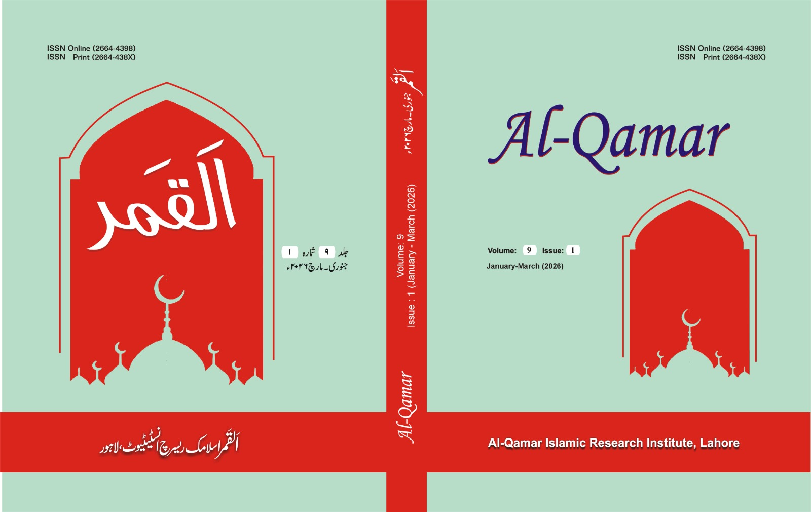

Board of Governors
The Board of Governors provides senior academic guidance, institutional oversight, quality assurance, and scholarly direction for Al-Qamar Islamic Research Institute.
View Board of GovernorsAl-Qamar Islamic Research Institute is dedicated to Islamic Studies, scholarly development, and serious research in Islamic thought and civilization.
Al-Qamar Islamic Research Institute is an academic research and publishing institute dedicated to Islamic Studies, scholarly development, and the promotion of serious research in Islamic thought and civilization.
The Institute provides a platform for researchers, scholars, teachers, students, and academic institutions to study Islam through authentic sources, classical scholarship, and modern research methods.
The Institute is committed to advancing knowledge in the major fields of Islamic Studies, including Qur'anic Studies, Hadith and Sunnah, Seerah, Islamic Law and Jurisprudence, Islamic History, Islamic Thought, Islamic Civilization, Tasawwuf, Comparative Religion, and contemporary Muslim society. Its purpose is to encourage meaningful research that connects the rich intellectual heritage of Islam with the needs and questions of the modern world.
Al-Qamar Islamic Research Institute works to promote academic excellence through research projects, scholarly publications, journals, books, conferences, seminars, training workshops, and research guidance. It supports scholars in producing original, ethical, and high-quality academic work that contributes to Islamic knowledge and benefits society.
The Institute believes that Islamic Studies should not only preserve the intellectual legacy of the past but also provide guidance for the present and future. Therefore, Al-Qamar encourages critical thinking, interdisciplinary dialogue, publication ethics, and global scholarly cooperation.
Operating under the vision of the Global Center for Research and Study, GCRS, Al-Qamar Islamic Research Institute aims to become a trusted center for Islamic research, academic publishing, and intellectual service at national and international levels. Its mission is to serve knowledge, strengthen research culture, preserve Islamic heritage, and promote a peaceful, informed, and morally responsible society.
The vision of Al-Qamar Islamic Research Institute is to become a leading international center for Islamic Studies, Islamic research, academic publishing, and scholarly development.
The Institute aims to serve as a trusted platform where the Qur'an, Sunnah, Seerah, Islamic law, Islamic history, Islamic civilization, and Muslim intellectual heritage are studied with academic seriousness, intellectual depth, and contemporary relevance.
Al-Qamar Islamic Research Institute seeks to promote a research culture rooted in the authentic sources of Islam and enriched by modern research methodologies.
The Institute envisions a scholarly environment where Islamic knowledge is not only preserved, but also critically studied, explained, published, and applied to the moral, intellectual, social, educational, and civilizational challenges of the present age.
The Institute aspires to contribute to the revival of Islamic scholarship, the reconstruction of Muslim thought, and the development of a peaceful, ethical, informed, and knowledge-based society.
The mission of Al-Qamar Islamic Research Institute is to advance the study, understanding, preservation, and dissemination of Islamic knowledge through research, publication, training, and academic collaboration.
The Institute Administration supervises academic planning, research coordination, publication management, training programs, institutional partnerships, and quality assurance for all scholarly activities of Al-Qamar Islamic Research Institute.
The Board of Governors provides senior academic guidance, institutional oversight, quality assurance, and scholarly direction for Al-Qamar Islamic Research Institute.
View Board of GovernorsThe Director General provides academic leadership, institutional vision, policy guidance, research priorities, and coordination with Global Center for Research and Study, GCRS.
View Director GeneralThe Chief Administrative Officer coordinates institutional administration, official communication, records, scheduling, application routing, and daily operational follow-up.
View CAO OfficeThe main objectives and functions of Al-Qamar Islamic Research Institute are to organize, promote, and support research in various fields of Islamic learning and Islamic Studies.
Al-Qamar's departments support focused research, publication, training, and scholarly collaboration across the major fields of Islamic Studies.
Academic study of the Holy Qur'an, Tafsir, Qur'anic sciences, and contemporary guidance.
Research in Hadith sciences, Sunnah studies, classical literature, and Prophetic guidance.
Study of Seerah, leadership, Muslim institutions, intellectual history, and civilization.
Islamic jurisprudence, legal theory, Maqasid al-Shariah, and contemporary legal questions.
Muslim intellectual history, Kalam, philosophy, Tasawwuf, literature, and culture.
World religions, interfaith dialogue, religious harmony, peacebuilding, and ethics.
Journal development, manuscript preparation, peer review, and research training.
Al-Qamar Islamic Research Institute publishes and supports academic journals, research books, edited volumes, conference proceedings, and scholarly publications in the field of Islamic Studies and related disciplines.
Al-Qamar Journal is a scholarly research journal published under the academic vision of Al-Qamar Islamic Research Institute. The journal is dedicated to promoting high-quality research in Islamic Studies and related academic fields.

The journal provides a platform for original, peer-reviewed, properly referenced, and ethically written research connected with Islamic knowledge, Muslim society, classical scholarship, and contemporary academic questions.
Research Journal "Al-Qamar", Lahore (ISSN Print 2664-438X, Online 2664-4398) is a double-blind peer-reviewed open access academic journal approved by the Higher Education Commission (HEC) of Pakistan in Y Category. The journal is published by Al-Qamar Islamic Research Institute, Lahore, an independent research institute.
The foundation of the journal was laid after two years of academic planning and editorial development, and its first issue was published in 2017. With more than 12 years of institutional research work behind the Institute, the journal reflects a sustained commitment to scholarly publication, research culture, and ethical academic practice.
Since its launch, the journal has received more than 40,000 manuscript submissions from scholars and researchers across Pakistan and abroad, out of which over 1,000 peer-reviewed research articles have been published. The journal publishes original research in Urdu, English, and Arabic and promotes academic dialogue across diverse scholarly traditions.
Along with journals, Al-Qamar Islamic Research Institute also works for the publication of academic books and research material. The books program serves researchers, students, libraries, universities, religious scholars, and academic institutions.
The Institute supports authored books, edited volumes, translations, monographs, research reports, training manuals, and thematic collections that preserve Islamic heritage and connect it with contemporary academic needs.
The publications program is designed to help scholars move from raw research material to polished academic output. It supports proposal review, manuscript development, editorial planning, citation improvement, peer review coordination, language refinement, indexing readiness, and dissemination through print and digital channels.
Across its journal and publication ecosystem, the Institute has supported a large volume of scholarly activity, including more than 40,000 manuscript submissions received for Research Journal Al-Qamar and over 1,000 peer-reviewed articles published. This experience strengthens the Institute's capacity to guide authors, editors, reviewers, and research teams in producing credible academic work.
The Institute expects all authors and contributors to follow proper academic and ethical standards. Every journal article, book chapter, monograph, translation, report, and training manual should demonstrate originality, clear argument, reliable sources, academic relevance, and respect for publication ethics.
Submissions are expected to pass through editorial screening, formatting review, plagiarism awareness checks, citation verification, and where required, a transparent peer review process. Authors should follow the relevant journal or book guidelines before submission and should clearly identify sources, translations, quotations, data, and previous publications.
The admissions section provides pathways for advanced researchers, graduates, teachers, scholars, and professionals who want structured academic training in Islamic Studies, research methodology, publication ethics, and scholarly writing.
Post Doctoral Fellowships are designed for senior researchers and PhD scholars who wish to pursue advanced research in Qur'anic Studies, Hadith, Seerah, Islamic law, Islamic thought, Islamic civilization, comparative religion, or academic publishing.
Fellows may work on research articles, monographs, edited volumes, translation projects, manuscript studies, and thematic research under institutional guidance.
Diploma Programs support students, teachers, researchers, and community scholars who want focused training in Islamic Studies, research methodology, academic writing, citation methods, publication ethics, and journal submission preparation.
Programs may include short modules, workshops, guided assignments, and academic mentoring.
Advanced Diplomas are intended for learners who require deeper specialization in Islamic research, Qur'anic and Hadith studies, Fiqh, Seerah, interfaith studies, manuscript development, scholarly editing, or academic publishing.
Advanced programs may combine seminars, supervised research, reading lists, research papers, and publication-oriented training.
Al-Qamar Islamic Research Institute welcomes qualified scholars, researchers, editors, trainers, coordinators, and academic support professionals who can contribute to Islamic research, publishing, training, and institutional development.
Al-Qamar Islamic Research Institute organizes national and international conferences, seminars, symposiums, workshops, lectures, panel discussions, and academic meetings to promote serious research and scholarly dialogue.
These academic events provide a platform for scholars, researchers, teachers, students, editors, religious scholars, and academic institutions to exchange ideas, present research, and discuss important issues facing the Muslim world and contemporary society.
The Institute believes that conferences and seminars play an important role in developing research culture. Through these events, scholars are able to share new perspectives, review classical Islamic scholarship, examine contemporary challenges, and build meaningful academic networks.
The Institute also arranges workshops and training sessions for young researchers, postgraduate students, journal editors, and faculty members. These programs may focus on research methodology, academic writing, article writing, thesis writing, citation and referencing, publication ethics, peer review, journal management, plagiarism awareness, proposal writing, and conference paper preparation.
Al-Qamar Islamic Research Institute welcomes academic collaboration with universities, colleges, research centers, madaris, libraries, journals, publishers, scholars, editors, and national and international academic organizations.
The Institute aims to build partnerships with institutions that share a commitment to research, education, publication, ethical scholarship, and intellectual development. Through collaboration, Al-Qamar Islamic Research Institute seeks to create opportunities for joint academic work, scholarly exchange, training, research publication, and institutional growth.
Collaborative activities may include joint conferences, seminars, workshops, research projects, faculty development programs, student research programs, journal partnerships, book publication projects, edited volumes, translation projects, library development, academic training, and international scholarly networking.
Through national and international collaboration, the Institute seeks to promote scholarly exchange, mutual learning, institutional cooperation, and intellectual service to the Muslim Ummah and the global academic community.
Al-Qamar Islamic Research Institute invites universities, academic departments, research centers, scholars, editors, publishers, libraries, and educational organizations to collaborate in areas of mutual academic interest. The Institute welcomes serious academic partnerships that promote research excellence, Islamic scholarship, ethical publication, intellectual dialogue, and service to society.
Official press releases from Al-Qamar Islamic Research Institute share institutional notices, journal updates, calls for papers, publication announcements, conference releases, training registrations, research opportunities, fellowship notices, internship updates, expert statements, and collaboration news.
Official calls for papers, special issue themes, submission opportunities, reviewer invitations, and article preparation guidance for scholars, researchers, faculty members, and postgraduate students.
Formal announcements for workshops, research methodology sessions, publication ethics training, academic writing programs, citation clinics, thesis support, and editorial training opportunities.
Press notices for fellowships, internships, postdoctoral calls, research assistant openings, visiting scholar opportunities, funded projects, and institutional collaboration updates.
Press releases about Al-Qamar Journal, including new issues, title pages, indexing information, editorial board notices, peer review updates, and publication policy announcements.
Official releases for conferences, seminars, symposiums, workshops, lecture series, panel discussions, research forums, keynote sessions, and archive requests for previous academic events.
The Institute may issue or facilitate scholarly panels, joint academic statements, expert opinions, and research-based guidance on contemporary religious, social, ethical, educational, and publication-related questions.
Requests are reviewed by relevant scholars, editors, researchers, and subject experts according to the nature of the issue, the required academic discipline, and the public importance of the topic.
Al-Qamar Islamic Research Institute welcomes communication from scholars, researchers, students, authors, editors, universities, colleges, research centers, publishers, libraries, and academic organizations.
For general information about the Institute, its academic activities, departments, research areas, publications, conferences, and services, please contact the administrative office of Al-Qamar Islamic Research Institute.
Al-Qamar Islamic Research Institute
Operated under Global Center for Research and Study, GCRS
Email: info@aqiri.org
Phone and WhatsApp coordination: contact@aqiri.org
Address: AQIRI Office, Pakistan
Researchers, scholars, postgraduate students, and academic institutions may contact the Institute for guidance related to research methodology, academic writing, article preparation, thesis development, citation styles, referencing, research ethics, and scholarly publication.
For Research Support:
Email: research@aqiri.org
Research supervision: supervision@aqiri.org
Academic writing support: writing@aqiri.org
Authors and contributors may contact the publication office for information about Al-Qamar Journal, book publication, manuscript submission, peer review process, publication ethics, journal guidelines, formatting requirements, and editorial policies.
For Events, Training and Collaboration:
Events: events@aqiri.org
Training: training@aqiri.org
Collaboration: collaboration@aqiri.org
For inquiries, proposals, submissions, and academic collaboration, please fill out the contact form below. Our team will review your message and respond as soon as possible.
Please provide complete and accurate details in your message so that the concerned department may respond properly. Authors are advised to mention the title of their manuscript, journal name, and submission status when contacting the publication office. Institutions interested in collaboration are requested to provide their official profile and proposed area of cooperation.